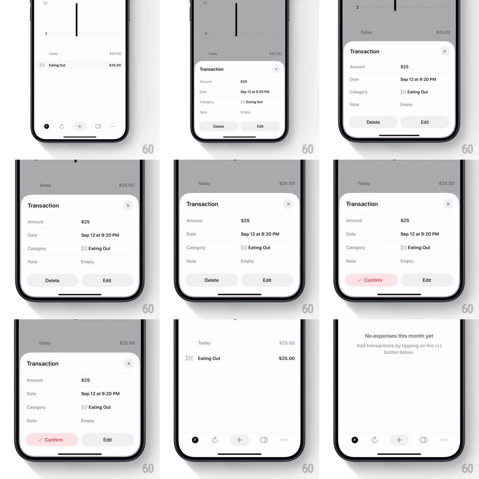

Media
Frame-by-frame

Rebuild this interaction 1:1: Five Cents' delete flow - a transaction bottom sheet's Delete turns into a red Confirm state, and confirming slides the sheet down while the deleted row collapses out of the list behind it, landing on the empty state.

Rebuild this interaction 1:1: Five Cents' delete flow - a transaction bottom sheet's Delete turns into a red Confirm state, and confirming slides the sheet down while the deleted row collapses out of the list behind it, landing on the empty state.
## Integration
Integration: stack-agnostic spec - springs given as stiffness/damping, timed motions as duration + curve; map every value to your framework and animation library of choice.
## Scene
Minimal light-gray list ("Today", "Eating Out $25.00"). Sheet: "Transaction" title with close X, rows (Amount $25, Date Sep 12 at 9:20 PM, Category Eating Out, Note Empty), Delete + Edit pills. Confirm state: Delete pill turns red with a checkmark "Confirm". Empty state: "No expenses this month yet - Add transactions by tapping on the (+) button below."
## Motion spec
Pattern: two-tap destructive confirm with collapse.
- Tap the list row: sheet rises (spring ~320/26, ~350ms) over a dimmed list (black 20%).
- Tap Delete: the pill morphs in place to red "✓ Confirm" (background crossfade to red, label swap, 200ms); Edit stays gray and inert.
- Tap Confirm: sheet slides down + fades (280ms ease-in) while simultaneously the deleted row's height collapses to 0 (300ms ease-in-out) and its content fades first (150ms); rows below slide up into the gap.
- The header total ($25.00) counts down to $0 as the row collapses (250ms).
- When the list empties, the empty-state copy fades in (300ms) with a soft 8px rise.
## Calibration
- Delete requires exactly two taps; the red state reverts to plain Delete after 3s without confirm.
- The row collapse and sheet dismissal run together - the list never waits for the sheet.
## Reduced motion
Sheet fades out; row disappears with a simple fade.
## Don't miss
- The checkmark inside the Confirm pill is part of the morph, not a separate element.
- The tab bar icons stay visible and unaffected throughout.